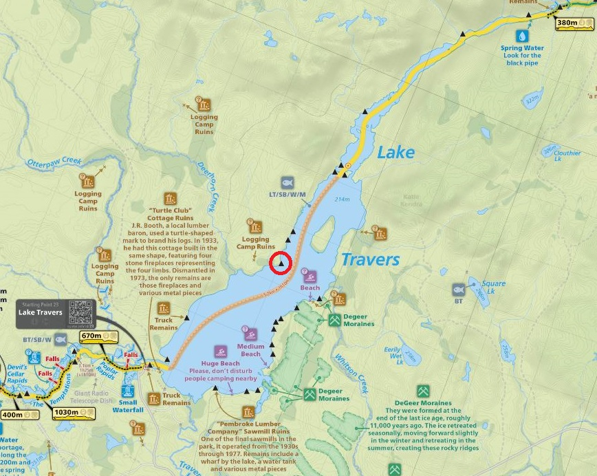
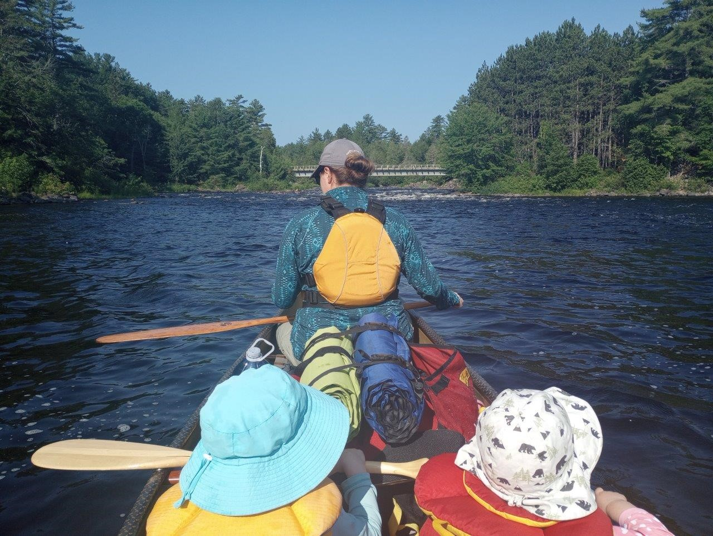
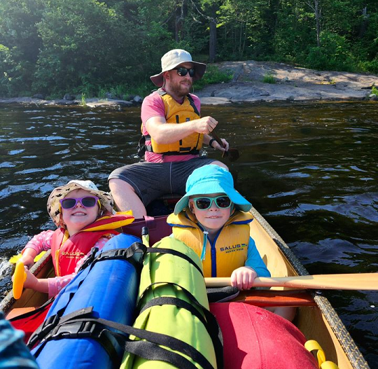
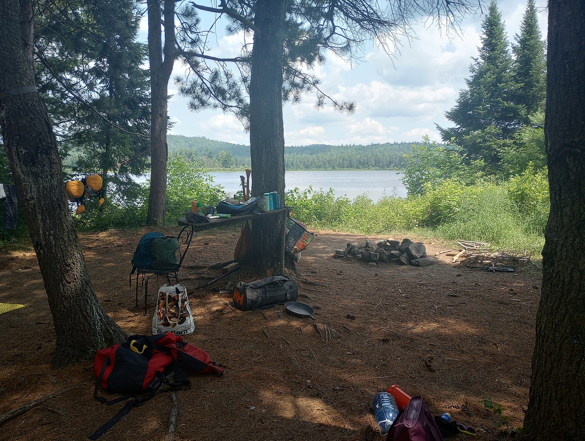
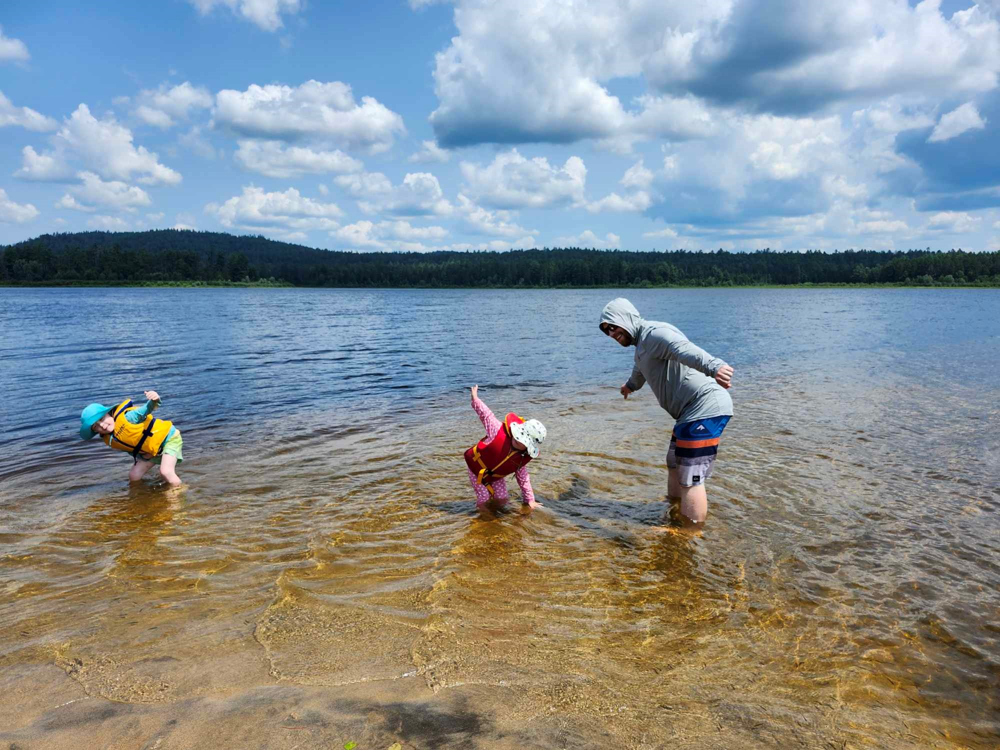
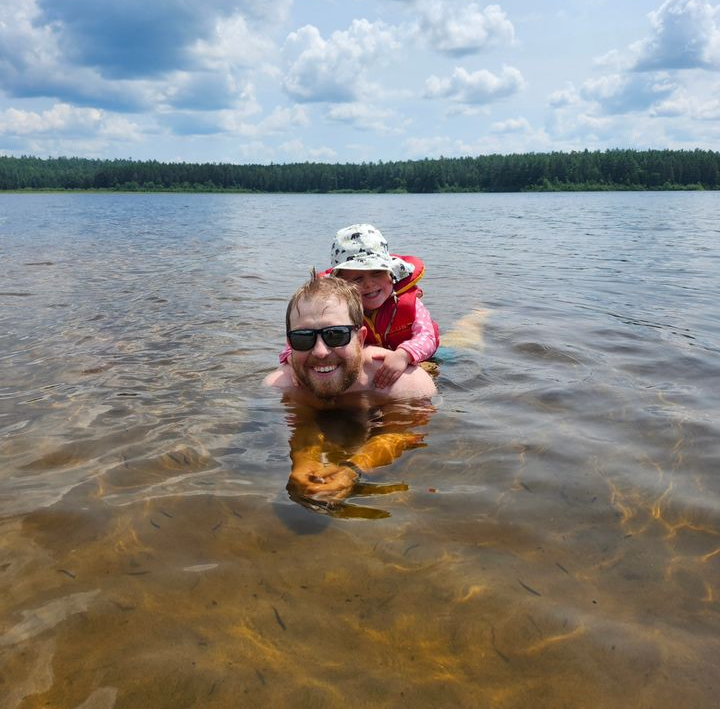
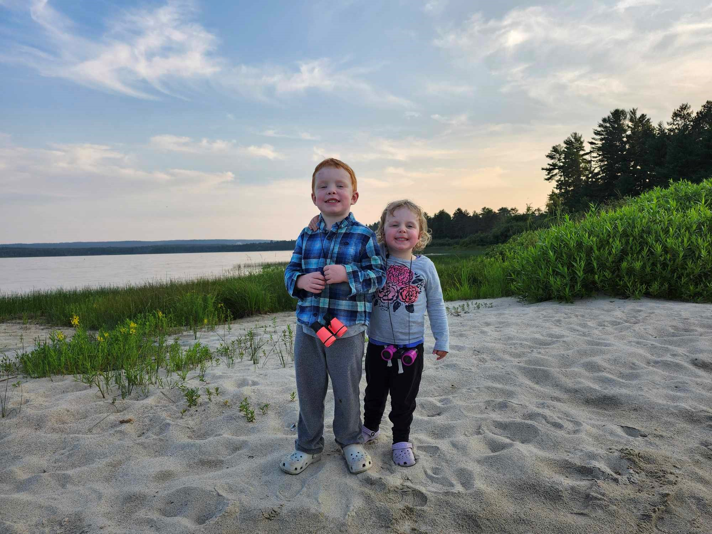
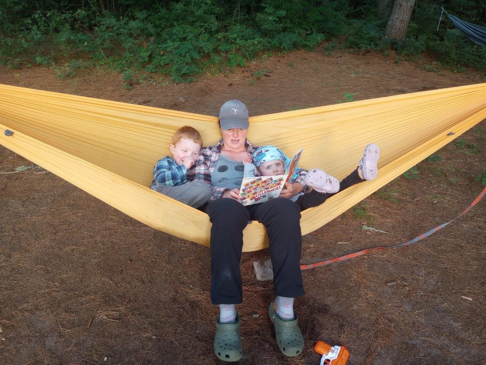
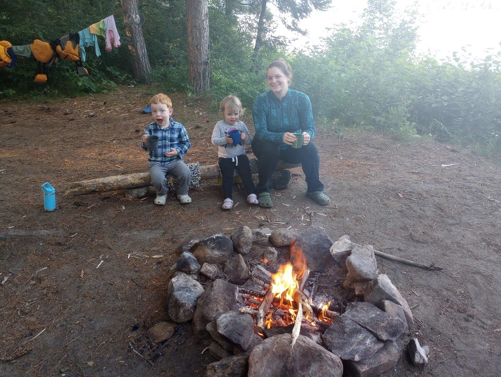

The first backcountry trip as a family, and Claire's first backcountry trip ever. 1 night, campsite circled in red.










 |
2024 July 13-14 Lake Travese Family Trip from Access Point 23 (Lake Traverse) The first backcountry trip as a family, and Claire's first backcountry trip ever. 1 night, campsite circled in red. |
|
Kids are pumped at the canoe launch, ready to go. Rapids in the background of the photo, and about to head out. Very hot and humid day, really nice weather to be on the lake. Our goal is to get a nice beachy site for swimming. Jumpy isn't as full as we thought, not bad for a 16'. |
 |
My view from the back, looking at the rapids and bridge at the landing. |
 |
Further up the lake, Katie's view looking backwards. Everyone is still in a good mood, although the request for snacks came in quickly. |
 |
Got a nice campsite on the West side of the lake, lots of beach and well shaded, good trees for some hammock relaxing. The sand flies are a bit of a pain however on the beach. |
|
Looking north down Traverse from our site, beach for playing is to the right in the photo, nice hot day. The lake itself is really quite nice, lots of cool campsites, I'm sure we'll be back here for sure at some point. |
 |
Playing in our private beach at the end of the peninsula, has a huge sandbar that goes out a fair distance, really good times playing here. Gordon has really enjoyed playing in the deeper water and doing some independent swimming. |
 |
Claire prefers to cling to one of us, but still having a great time. |
 |
A rare posed photo without Gordon sticking out his tongue. |
 |
Kids reading with mommy in the hammock, some things never change. |
 |
Early evening campfire before bedtime, had smokies for dinner grilled on the fire. The bedtime itself was a bit of a nightmare, Claire didn't want to sleep at all, much to the chegrin of Gordon. Overall a great first family trip, need more snacks next time tho. |